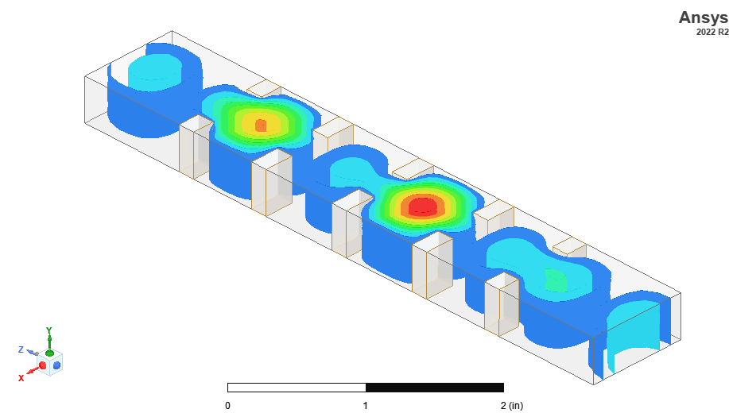
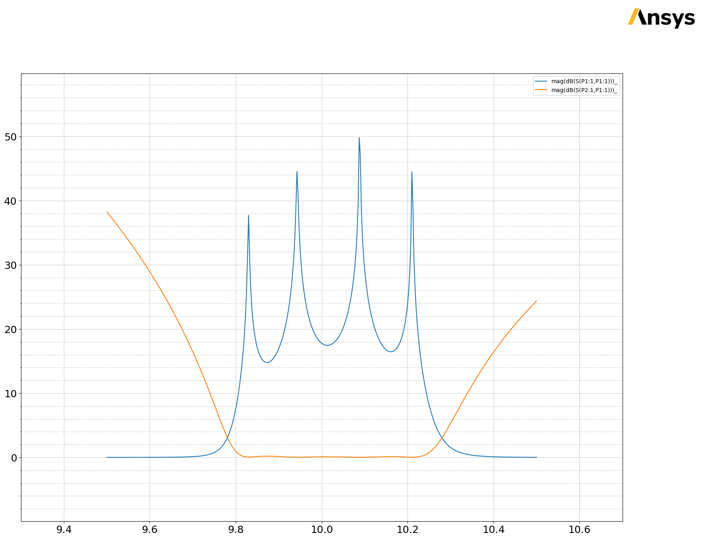
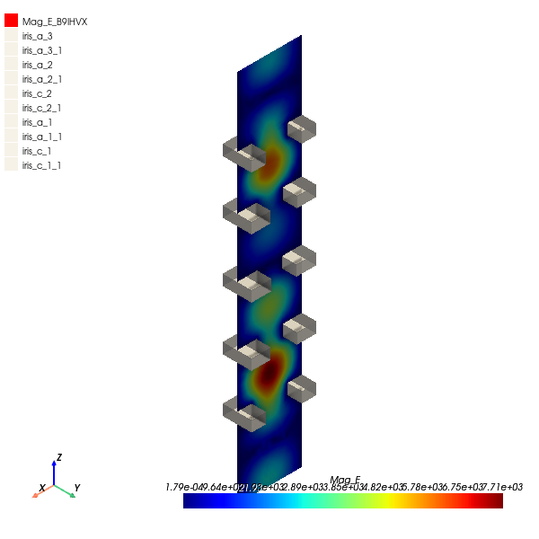

Download this example
Download this example as a Jupyter Notebook or as a Python script.
Inductive iris waveguide filter#
This example shows how to build and analyze a four-pole X-Band waveguide filter using inductive irises.
Keywords: HFSS, modal, waveguide filter.

Perform imports and define constants#
Perform required imports.
[1]:
import os
import tempfile
import time
[2]:
import ansys.aedt.core
Define constants.
[3]:
AEDT_VERSION = "2024.2"
NUM_CORES = 4
NG_MODE = False # Open AEDT UI when it is launched.
Launch AEDT#
Define parameters and values for waveguide iris filter#
Define these parameters:
l: Length of the cavity from the mid-point of one iris to the midpoint of the next iris
w: Width of the iris opening
a: Long dimension of the waveguide cross-section (X-Band)
b: Short dimension of the waveguide cross-section
t: Metal thickness of the iris insert
[4]:
wgparams = {
"l": [0.7428, 0.82188],
"w": [0.50013, 0.3642, 0.3458],
"a": 0.4,
"b": 0.9,
"t": 0.15,
"units": "in",
}
Create temporary directory#
Create a temporary directory where downloaded data or dumped data can be stored. If you’d like to retrieve the project data for subsequent use, the temporary folder name is given by temp_folder.name.
[5]:
temp_folder = tempfile.TemporaryDirectory(suffix=".ansys")
Create HFSS design#
[6]:
project_name = os.path.join(temp_folder.name, "waveguide.aedt")
hfss = ansys.aedt.core.Hfss(
project=project_name,
version=AEDT_VERSION,
design="filter",
solution_type="Modal",
non_graphical=NG_MODE,
new_desktop=True,
close_on_exit=True,
)
PyAEDT INFO: Python version 3.10.11 (tags/v3.10.11:7d4cc5a, Apr 5 2023, 00:38:17) [MSC v.1929 64 bit (AMD64)]
PyAEDT INFO: PyAEDT version 0.12.dev0.
PyAEDT INFO: Initializing new Desktop session.
PyAEDT INFO: Log on console is enabled.
PyAEDT INFO: Log on file C:\Users\ansys\AppData\Local\Temp\pyaedt_ansys_dcd7cfcd-94f7-44af-ad02-3766a9da8e79.log is enabled.
PyAEDT INFO: Log on AEDT is enabled.
PyAEDT INFO: Debug logger is disabled. PyAEDT methods will not be logged.
PyAEDT INFO: Launching PyAEDT with gRPC plugin.
PyAEDT INFO: New AEDT session is starting on gRPC port 63073
PyAEDT INFO: AEDT installation Path C:\Program Files\AnsysEM\v242\Win64
PyAEDT INFO: Ansoft.ElectronicsDesktop.2024.2 version started with process ID 5952.
PyAEDT INFO: Project waveguide has been created.
PyAEDT INFO: Added design 'filter' of type HFSS.
PyAEDT INFO: Aedt Objects correctly read
Initialize design parameters#
[7]:
hfss.modeler.model_units = "in" # Set to inches
var_mapping = dict() # Used by parse_expr to parse expressions.
for key in wgparams:
if type(wgparams[key]) in [int, float]:
hfss[key] = str(wgparams[key]) + wgparams["units"]
var_mapping[key] = wgparams[key] # Used for expression parsing.
elif type(wgparams[key]) == list:
count = 1
for v in wgparams[key]:
this_key = key + str(count)
hfss[this_key] = str(v) + wgparams["units"]
var_mapping[
this_key
] = v # Used to parse expressions and generate numerical values.
count += 1
if len(wgparams["l"]) % 2 == 0:
zstart = "-t/2" # Even number of cavities, odd number of irises.
is_even = True
else:
zstart = "l1/2 - t/2" # Odd number of cavities, even number of irises.
is_even = False
PyAEDT INFO: Modeler class has been initialized! Elapsed time: 0m 1sec
Draw parametric waveguide filter#
Define a function to place each iris at the correct longitudinal (z) position, Loop from the largest index (interior of the filter) to 1, which is the first iris nearest the waveguide ports.
[8]:
def place_iris(z_pos, dz, param_count):
w_str = "w" + str(param_count) # Iris width parameter as a string.
this_name = "iris_a_" + str(param_count) # Iris object name in the HFSS project.
iris_new = [] # Return a list of the two objects that make up the iris.
if this_name in hfss.modeler.object_names:
this_name = this_name.replace("a", "c")
iris_new.append(
hfss.modeler.create_box(
["-b/2", "-a/2", z_pos],
["(b - " + w_str + ")/2", "a", dz],
name=this_name,
material="silver",
)
)
iris_new.append(iris_new[0].mirror([0, 0, 0], [1, 0, 0], duplicate=True))
return iris_new
Place irises#
Place the irises from inner (highest integer) to outer.
[9]:
zpos = zstart
for count in reversed(range(1, len(wgparams["w"]) + 1)):
if count < len(wgparams["w"]): # Update zpos
zpos = zpos + "".join([" + l" + str(count) + " + "])[:-3]
iris = place_iris(zpos, "t", count)
iris = place_iris("-(" + zpos + ")", "-t", count)
else: # Place first iris
iris = place_iris(zpos, "t", count)
if not is_even:
iris = place_iris("-(" + zpos + ")", "-t", count)
PyAEDT INFO: Materials class has been initialized! Elapsed time: 0m 0sec
Draw full waveguide with ports#
Use hfss.variable_manager, which acts like a dictionary, to return an instance of the ansys.aedt.core.application.variables.VariableManager class for any variable. The VariableManager instance takes the HFSS variable name as a key. VariableManager properties enable access to update, modify, and evaluate variables.
[10]:
var_mapping["port_extension"] = 1.5 * wgparams["l"][0]
hfss["port_extension"] = str(var_mapping["port_extension"]) + wgparams["units"]
hfss["wg_z_start"] = "-(" + zpos + ") - port_extension"
hfss["wg_length"] = "2*(" + zpos + " + port_extension )"
wg_z_start = hfss.variable_manager["wg_z_start"]
wg_length = hfss.variable_manager["wg_length"]
hfss["u_start"] = "-a/2"
hfss["u_end"] = "a/2"
hfss.modeler.create_box(
["-b/2", "-a/2", "wg_z_start"],
["b", "a", "wg_length"],
name="waveguide",
material="vacuum",
)
[10]:
<ansys.aedt.core.modeler.cad.object_3d.Object3d at 0x1f03ee8a470>
Draw the entire waveguide#
The variable # wg_z is the total length of the waveguide, including the port extension. Note that the .evaluated_value provides access to the numerical value of wg_z_start, which is an expression in HFSS.
[11]:
wg_z = [
wg_z_start.evaluated_value,
hfss.value_with_units(wg_z_start.numeric_value + wg_length.numeric_value, "in"),
]
Assign wave ports to the end faces of the waveguide and define the calibration lines to ensure self-consistent polarization between wave ports.
[12]:
count = 0
ports = []
for n, z in enumerate(wg_z):
face_id = hfss.modeler.get_faceid_from_position([0, 0, z], assignment="waveguide")
u_start = [0, hfss.variable_manager["u_start"].evaluated_value, z]
u_end = [0, hfss.variable_manager["u_end"].evaluated_value, z]
ports.append(
hfss.wave_port(
face_id,
integration_line=[u_start, u_end],
name="P" + str(n + 1),
renormalize=False,
)
)
PyAEDT INFO: Boundary Wave Port P1 has been correctly created.
PyAEDT INFO: Boundary Wave Port P2 has been correctly created.
Insert mesh adaptation setup#
Insert a mesh adaptation setup using refinement at two frequencies. This approach is useful for resonant structures because the coarse initial mesh impacts the resonant frequency and, hence, the field propagation through the filter. Adaptation at multiple frequencies helps to ensure that energy propagates through the resonant structure while the mesh is refined.
[13]:
setup = hfss.create_setup(
"Setup1",
setup_type="HFSSDriven",
MultipleAdaptiveFreqsSetup=["9.8GHz", "10.2GHz"],
MaximumPasses=5,
)
setup.create_frequency_sweep(
unit="GHz",
name="Sweep1",
start_frequency=9.5,
stop_frequency=10.5,
sweep_type="Interpolating",
)
PyAEDT INFO: Linear count sweep Sweep1 has been correctly created
[13]:
<ansys.aedt.core.modules.solve_sweeps.SweepHFSS at 0x1f0424fb5e0>
Solve the project with two tasks. Each frequency point is solved simultaneously.
[14]:
setup.analyze(cores=NUM_CORES)
PyAEDT INFO: Key Desktop/ActiveDSOConfigurations/HFSS correctly changed.
PyAEDT INFO: Solving design setup Setup1
PyAEDT INFO: Key Desktop/ActiveDSOConfigurations/HFSS correctly changed.
PyAEDT INFO: Design setup Setup1 solved correctly in 0.0h 1.0m 21.0s
Postprocess#
The following commands fetch solution data from HFSS for plotting directly from the Python interpreter.
Caution: The syntax for expressions must be identical to that used in HFSS.
[15]:
traces_to_plot = hfss.get_traces_for_plot(second_element_filter="P1*")
report = hfss.post.create_report(traces_to_plot) # Creates a report in HFSS
solution = report.get_solution_data()
plt = solution.plot(solution.expressions) # Matplotlib axes object.
PyAEDT INFO: Parsing C:/Users/ansys/AppData/Local/Temp/tmp3tgt1l6y.ansys/waveguide.aedt.
PyAEDT INFO: File C:/Users/ansys/AppData/Local/Temp/tmp3tgt1l6y.ansys/waveguide.aedt correctly loaded. Elapsed time: 0m 0sec
PyAEDT INFO: aedt file load time 0.01569223403930664
PyAEDT INFO: PostProcessor class has been initialized! Elapsed time: 0m 0sec
PyAEDT INFO: Post class has been initialized! Elapsed time: 0m 0sec
PyAEDT INFO: Solution Data Correctly Loaded.

The following command generates a field plot in HFSS and uses PyVista to plot the field in Jupyter.
[16]:
plot = hfss.post.plot_field(
quantity="Mag_E",
assignment=["Global:XZ"],
plot_type="CutPlane",
setup=hfss.nominal_adaptive,
intrinsics={"Freq": "9.8GHz", "Phase": "0deg"},
export_path=hfss.working_directory,
show=False,
)
C:\actions-runner\_work\pyaedt-examples\pyaedt-examples\.venv\lib\site-packages\pyvista\jupyter\notebook.py:37: UserWarning: Failed to use notebook backend:
No module named 'trame'
Falling back to a static output.
warnings.warn(

Release AEDT#
The following command saves the project to a file and closes AEDT.
[17]:
hfss.save_project()
hfss.release_desktop()
# Wait 3 seconds to allow AEDT to shut down before cleaning the temporary directory.
time.sleep(3)
PyAEDT INFO: Project waveguide Saved correctly
PyAEDT INFO: Desktop has been released and closed.
Clean up#
All project files are saved in the folder temp_folder.name. If you’ve run this example as a Jupyter notebook, you can retrieve those project files. The following cell removes all temporary files, including the project folder.
[18]:
temp_folder.cleanup()
Download this example
Download this example as a Jupyter Notebook or as a Python script.